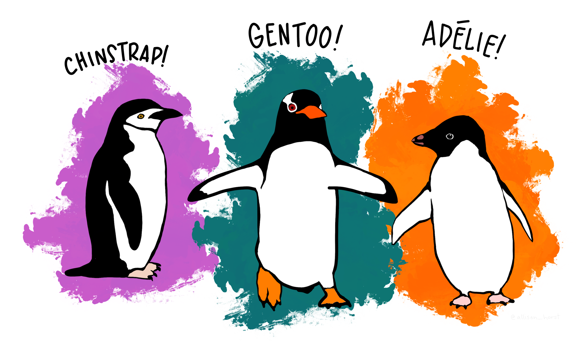

import pandas as pdIntroduction to Python and Pandas
IN2004B: Generation of Value with Data Analytics
Agenda
- Introduction to Python
- Reading data with Pandas
Introduction to Python
Python
A versatile programming language.
It is free!
It is widely used for data cleaning, data visualization, and data modelling.
It can be extended with packages (libraries) developed by other users.

Google Colab
Google’s free cloud collaboration platform for creating Python documents.
Run Python and collaborate on Jupyter notebooks for free.
Harness the power of GPUs for free to accelerate your data science projects.
Easily save and upload your notebooks to Google Drive.

Python libraries
Libraries are the fundamental units of reproducible Python code. They include reusable Python functions, documentation describing how to use them, and sample data.
In this course, we will be working mostly with the following libraries:
pandasfor data manipulationmatplotlibandseabornfor data visualizationstatsmodelsandscikit-learnfor data modelling
Reading data with Pandas
Loading data in Python
We assume that data is stored in an Excel file, where the rows are the observations and the columns contain the variables (e.g., predictors or responses). As an example, let’s use the file penguins.xlsx.


The dataset penguins.xlsx contains data from penguins living in three islands.

pandas library

- pandas is an open-source Python library for data manipulation and analysis.
- It is built on top of numpy for high-performance data operations.
- It allows the user to import, clean, transform, and analyze data efficiently.
- https://pandas.pydata.org/
Importing pandas
Fortunately, the pandas library is already pre-installed in Google Colab.
However, we need to inform Google Colab that we want to use pandas and its functions using the following command:
The command as pd allows us to have a short name for pandas. To use a function of pandas, we use the command pd.function().
Loading data using pandas
The following code shows how to read the data in the file “penguins.xlsx” into Python.
# Load the Excel file into a pandas DataFrame.
penguins_data = pd.read_excel("penguins.xlsx")The function head()
The function head() allows you to print the first rows of a pandas data frame.
# Print the first 4 rows of the dataset.
penguins_data.head(4)| species | island | bill_length_mm | bill_depth_mm | flipper_length_mm | body_mass_g | sex | year | |
|---|---|---|---|---|---|---|---|---|
| 0 | Adelie | Torgersen | 39.1 | 18.7 | 181.0 | 3750.0 | male | 2007 |
| 1 | Adelie | Torgersen | 39.5 | 17.4 | 186.0 | 3800.0 | female | 2007 |
| 2 | Adelie | Torgersen | 40.3 | 18.0 | 195.0 | 3250.0 | female | 2007 |
| 3 | Adelie | Torgersen | NaN | NaN | NaN | NaN | NaN | 2007 |
Indexing variables a dataset
We can select a specific variables of a data frame using the syntaxis below.
penguins_data['bill_length_mm']0 39.1
1 39.5
2 40.3
3 NaN
4 36.7
...
339 55.8
340 43.5
341 49.6
342 50.8
343 50.2
Name: bill_length_mm, Length: 344, dtype: float64Here, we selected the variable bill_length_mm in the penguins_data dataset.
To index multiple variables of a data frame, we put the names of the variables in a list object. For example, we select bill_length_mm, species, and island as follows:
sub_penguins_data = penguins_data[ ['bill_length_mm', 'species', 'island'] ]
sub_penguins_data.head()| bill_length_mm | species | island | |
|---|---|---|---|
| 0 | 39.1 | Adelie | Torgersen |
| 1 | 39.5 | Adelie | Torgersen |
| 2 | 40.3 | Adelie | Torgersen |
| 3 | NaN | Adelie | Torgersen |
| 4 | 36.7 | Adelie | Torgersen |
Indexing rows
To index rows in a dataset, we use the argument loc from pandas. For example, we select the rows 3 to 6 of the penguins_dataset dataset:
rows_penguins_data = penguins_data.loc[2:5]
rows_penguins_data| species | island | bill_length_mm | bill_depth_mm | flipper_length_mm | body_mass_g | sex | year | |
|---|---|---|---|---|---|---|---|---|
| 2 | Adelie | Torgersen | 40.3 | 18.0 | 195.0 | 3250.0 | female | 2007 |
| 3 | Adelie | Torgersen | NaN | NaN | NaN | NaN | NaN | 2007 |
| 4 | Adelie | Torgersen | 36.7 | 19.3 | 193.0 | 3450.0 | female | 2007 |
| 5 | Adelie | Torgersen | 39.3 | 20.6 | 190.0 | 3650.0 | male | 2007 |
rows_penguins_data| species | island | bill_length_mm | bill_depth_mm | flipper_length_mm | body_mass_g | sex | year | |
|---|---|---|---|---|---|---|---|---|
| 2 | Adelie | Torgersen | 40.3 | 18.0 | 195.0 | 3250.0 | female | 2007 |
| 3 | Adelie | Torgersen | NaN | NaN | NaN | NaN | NaN | 2007 |
| 4 | Adelie | Torgersen | 36.7 | 19.3 | 193.0 | 3450.0 | female | 2007 |
| 5 | Adelie | Torgersen | 39.3 | 20.6 | 190.0 | 3650.0 | male | 2007 |
Note that the index 2 and 5 refer to observations 3 and 7, respectively, in the dataset. This is because the first index in Python is 0.
Indexing rows and columns
Using loc, we can also retrieve a subset from the dataset by selecting specific columns and rows.
sub_rows_pdata = penguins_data.loc[2:5, ['bill_length_mm', 'species', 'island'] ]
sub_rows_pdata| bill_length_mm | species | island | |
|---|---|---|---|
| 2 | 40.3 | Adelie | Torgersen |
| 3 | NaN | Adelie | Torgersen |
| 4 | 36.7 | Adelie | Torgersen |
| 5 | 39.3 | Adelie | Torgersen |
Data manipulation with pandas
Chaining operations with pandas
One of the most important techniques in pandas is chaining, which allows for cleaner and more readable data manipulation.
The general structure of chaining looks like this:

Key pandas methods
pandas provides methods or functions to solve common data manipulation tasks:
.filter()selects specific columns or rows..query()filters observations based on conditions..assign()adds new variables that are functions of existing variables..sort_values()changes the order of rows..agg()reduces multiple values to a single numerical summary.

To practice, we will use the dataset penguins_data.
Example 1
Let’s use the “penguins.xlsx” dataset.
# Preview the dataset.
penguins_data.head(4)| species | island | bill_length_mm | bill_depth_mm | flipper_length_mm | body_mass_g | sex | year | |
|---|---|---|---|---|---|---|---|---|
| 0 | Adelie | Torgersen | 39.1 | 18.7 | 181.0 | 3750.0 | male | 2007 |
| 1 | Adelie | Torgersen | 39.5 | 17.4 | 186.0 | 3800.0 | female | 2007 |
| 2 | Adelie | Torgersen | 40.3 | 18.0 | 195.0 | 3250.0 | female | 2007 |
| 3 | Adelie | Torgersen | NaN | NaN | NaN | NaN | NaN | 2007 |
Selecting columns with .filter()
Select the columns species, body_mass_g and sex.
(penguins_data
.filter(["species", "body_mass_g", "sex"], axis = 1)
).head()| species | body_mass_g | sex | |
|---|---|---|---|
| 0 | Adelie | 3750.0 | male |
| 1 | Adelie | 3800.0 | female |
| 2 | Adelie | 3250.0 | female |
| 3 | Adelie | NaN | NaN |
| 4 | Adelie | 3450.0 | female |
The axis argument tells .filter() whether to select rows (0) or columns (1) from the dataframe.
(penguins_data
.filter(["species", "body_mass_g", "sex"], axis = 1)
).head()The
.head()command allows us to print the first six rows of the newly produced dataframe. We must remove it to have the entire new dataframe.
We can also use .filter() to select rows too. To this end, we set axis = 1. We can select specific rows, such as 0 and 10.
(penguins_data
.filter([0, 10], axis = 0)
)| species | island | bill_length_mm | bill_depth_mm | flipper_length_mm | body_mass_g | sex | year | |
|---|---|---|---|---|---|---|---|---|
| 0 | Adelie | Torgersen | 39.1 | 18.7 | 181.0 | 3750.0 | male | 2007 |
| 10 | Adelie | Torgersen | 37.8 | 17.1 | 186.0 | 3300.0 | NaN | 2007 |
Or, we can select a set of rows using the function range(). For example, let’s select the first 5 rows.
(penguins_data
.filter(range(5), axis = 0)
)| species | island | bill_length_mm | bill_depth_mm | flipper_length_mm | body_mass_g | sex | year | |
|---|---|---|---|---|---|---|---|---|
| 0 | Adelie | Torgersen | 39.1 | 18.7 | 181.0 | 3750.0 | male | 2007 |
| 1 | Adelie | Torgersen | 39.5 | 17.4 | 186.0 | 3800.0 | female | 2007 |
| 2 | Adelie | Torgersen | 40.3 | 18.0 | 195.0 | 3250.0 | female | 2007 |
| 3 | Adelie | Torgersen | NaN | NaN | NaN | NaN | NaN | 2007 |
| 4 | Adelie | Torgersen | 36.7 | 19.3 | 193.0 | 3450.0 | female | 2007 |
Filtering rows with .query()
An alternative way of selecting rows is .query(). Compared to .filter(), .query() allows us to filter the data using statements or queries involving the variables.
For example, let’s filter the data for the species “Gentoo.”
(penguins_data
.query("species == 'Gentoo'")
)(penguins_data
.query("species == 'Gentoo'")
).head()| species | island | bill_length_mm | bill_depth_mm | flipper_length_mm | body_mass_g | sex | year | |
|---|---|---|---|---|---|---|---|---|
| 152 | Gentoo | Biscoe | 46.1 | 13.2 | 211.0 | 4500.0 | female | 2007 |
| 153 | Gentoo | Biscoe | 50.0 | 16.3 | 230.0 | 5700.0 | male | 2007 |
| 154 | Gentoo | Biscoe | 48.7 | 14.1 | 210.0 | 4450.0 | female | 2007 |
| 155 | Gentoo | Biscoe | 50.0 | 15.2 | 218.0 | 5700.0 | male | 2007 |
| 156 | Gentoo | Biscoe | 47.6 | 14.5 | 215.0 | 5400.0 | male | 2007 |
We can also filter the data to get penguins with a body mass greater than 5000g.
(penguins_data
.query("body_mass_g > 5000")
).head()| species | island | bill_length_mm | bill_depth_mm | flipper_length_mm | body_mass_g | sex | year | |
|---|---|---|---|---|---|---|---|---|
| 153 | Gentoo | Biscoe | 50.0 | 16.3 | 230.0 | 5700.0 | male | 2007 |
| 155 | Gentoo | Biscoe | 50.0 | 15.2 | 218.0 | 5700.0 | male | 2007 |
| 156 | Gentoo | Biscoe | 47.6 | 14.5 | 215.0 | 5400.0 | male | 2007 |
| 159 | Gentoo | Biscoe | 46.7 | 15.3 | 219.0 | 5200.0 | male | 2007 |
| 161 | Gentoo | Biscoe | 46.8 | 15.4 | 215.0 | 5150.0 | male | 2007 |
We can even combine .filter() and .query(). For example, let’s select the columns species, body_mass_g and sex, then filter the data for the “Gentoo” species.
(penguins_data
.filter(["species", "body_mass_g", "sex"], axis = 1)
.query("species == 'Gentoo'")
).head(4)| species | body_mass_g | sex | |
|---|---|---|---|
| 152 | Gentoo | 4500.0 | female |
| 153 | Gentoo | 5700.0 | male |
| 154 | Gentoo | 4450.0 | female |
| 155 | Gentoo | 5700.0 | male |
Create new columns with .assign()
With .assign(), we can create new columns (variables) that are functions of existing ones. This function uses a special Python keyword called lambda. Technically, this keyword defines an anonymous function.
For example, we create a new variable LDRatio equaling the ratio of bill_length_mm and bill_depth_mm.
(penguins_data
.assign(LDRatio = lambda df: df["bill_length_mm"] / df["bill_depth_mm"])
)In this code, the df after lambda indicates that the dataframe (penguins_data) will be referred to as df inside the function. The colon : sets the start of the function.
(penguins_data
.assign(LDRatio = lambda df: df["bill_length_mm"] / df["bill_depth_mm"])
)The code appends the new variable to the end of the resulting dataframe.
We can see the new variable using .filter().
(penguins_data
.assign(LDRatio = lambda df: df["bill_length_mm"] / df["bill_depth_mm"])
.filter(["bill_length_mm", "bill_depth_mm", "LDRatio"], axis = 1)
).head()| bill_length_mm | bill_depth_mm | LDRatio | |
|---|---|---|---|
| 0 | 39.1 | 18.7 | 2.090909 |
| 1 | 39.5 | 17.4 | 2.270115 |
| 2 | 40.3 | 18.0 | 2.238889 |
| 3 | NaN | NaN | NaN |
| 4 | 36.7 | 19.3 | 1.901554 |
Sorting with .sort_values()
We can sort the data based on a column like bill_length_mm.
(penguins_data
.sort_values("bill_length_mm")
).head(4)| species | island | bill_length_mm | bill_depth_mm | flipper_length_mm | body_mass_g | sex | year | |
|---|---|---|---|---|---|---|---|---|
| 142 | Adelie | Dream | 32.1 | 15.5 | 188.0 | 3050.0 | female | 2009 |
| 98 | Adelie | Dream | 33.1 | 16.1 | 178.0 | 2900.0 | female | 2008 |
| 70 | Adelie | Torgersen | 33.5 | 19.0 | 190.0 | 3600.0 | female | 2008 |
| 92 | Adelie | Dream | 34.0 | 17.1 | 185.0 | 3400.0 | female | 2008 |
To sort in descending order, use ascending=False inside sort_values().
(penguins_data
.sort_values("bill_length_mm", ascending=False)
).head()| species | island | bill_length_mm | bill_depth_mm | flipper_length_mm | body_mass_g | sex | year | |
|---|---|---|---|---|---|---|---|---|
| 185 | Gentoo | Biscoe | 59.6 | 17.0 | 230.0 | 6050.0 | male | 2007 |
| 293 | Chinstrap | Dream | 58.0 | 17.8 | 181.0 | 3700.0 | female | 2007 |
| 253 | Gentoo | Biscoe | 55.9 | 17.0 | 228.0 | 5600.0 | male | 2009 |
| 339 | Chinstrap | Dream | 55.8 | 19.8 | 207.0 | 4000.0 | male | 2009 |
| 267 | Gentoo | Biscoe | 55.1 | 16.0 | 230.0 | 5850.0 | male | 2009 |
Summarizing with .agg()
We can calculate summary statistics of the columns bill_length_mm, bill_depth_mm, and body_mass_g.
(penguins_data
.filter(["bill_length_mm", "bill_depth_mm", "body_mass_g"], axis = 1)
.agg(["mean"])
)| bill_length_mm | bill_depth_mm | body_mass_g | |
|---|---|---|---|
| mean | 43.92193 | 17.15117 | 4201.754386 |
By default,
agg()ignores missing values.
Saving results in new objects
After performing operations on our data, we can save the modified dataset as a new object.
mean_penguins_data = (penguins_data
.filter(["bill_length_mm", "bill_depth_mm", "body_mass_g"], axis = 1)
.agg(["mean"])
)
mean_penguins_data| bill_length_mm | bill_depth_mm | body_mass_g | |
|---|---|---|---|
| mean | 43.92193 | 17.15117 | 4201.754386 |
More on pandas